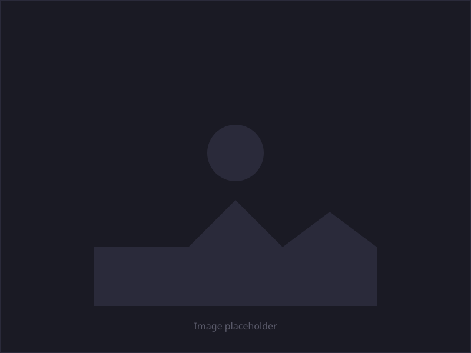

Improve User Experience of VR Training Simulator, HiSkill
HiSkill is a professional simulation training tool for Hiab loader crane operators. I helped Hiab to improve UX design by interviewing the users and testing their new design features.

Overview
HiSkill is a VR training tool that equipment operators can use to train with simulated Hiab equipment in a virtual environment. I redesigned the introduction and the main navigation of HiSkill to improve the user experience.
Challenge
VR training environments present unique UX challenges: users need clear orientation in 3D space, intuitive navigation without traditional UI patterns, and onboarding that prepares them for immersive interaction. The existing introduction and navigation flow needed refinement to reduce friction for first-time users.
Approach
I focused on simplifying the entry experience and restructuring the main navigation so operators could quickly understand available training modules and move between them with confidence. Design decisions accounted for the spatial nature of VR and the need for legible, accessible interaction patterns in a headset environment.

Outcome
The redesigned introduction and navigation provided a clearer path into training sessions, helping operators get started faster and navigate the VR environment with less confusion.